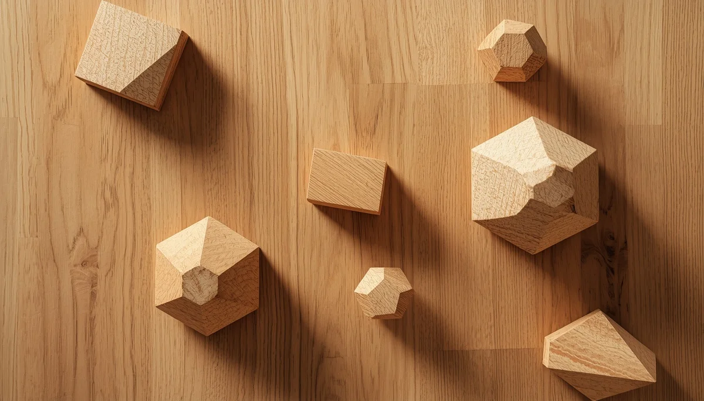

Psicomotricidad fina y gruesa en la escuela infantil
La llegada a la etapa escolar supone un cambio de ritmo en el que la psicomotricidad gruesa (saltar, correr, mantener el equilibrio) y la psicomotricidad fina (manipular pequeñas piezas, trazar, abrochar) se convierten en los pilares fundamentales sobre los que se asentarán los futuros aprendizajes académicos, como la escritura y la atención sostenida en el aula.
El cuerpo como vehículo del aprendizaje escolar
Antes de sostener un lápiz con soltura sobre el papel, las manos y los dedos necesitan haber experimentado la fuerza, la presión y la manipulación de elementos variados en espacios de juego libre. Del mismo modo, el dominio del esquema corporal y la lateralidad en el patio escolar facilitan la orientación espacial en los cuadernos y libros de texto.
Actividades escolares basadas en el movimiento
Las escuelas infantiles respetuosas integran circuitos de movimiento, talleres de manipulación sensorial y juegos simbólicos corporales que garantizan un tránsito armónico hacia las exigencias formales de la etapa escolar.
"La mano y el cerebro aprenden unidos; cuidar la psicomotricidad en la escuela es asegurar un pensamiento ágil, creativo y coordinado."
Una transición escolar fundamentada en la acción
Vincular el entorno escolar con el movimiento corporal consolida bases sólidas para que el niño encare los nuevos retos académicos con seguridad, alegría y bienestar.
➔ Volver al índice de Desarrollo psicomotor